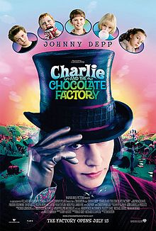

השראה לתהליך :
את ההשראה לתהליך קיבלתי מתוך הסרט עצמו , הצבעים שבהם השתמשתי, הדמויות המרכזיות של הסרט שבחרתי להציג בפוסטר ואת השחקן הראשי – צ'רלי עצמו.
קשיים בתהליך :
חלק מהדמויות לקוחות מתוך האינטרנט ,
הקושי המרכזי היה למצוא את דמויות הסרט ואלמנטים לפוסטר
מתוך הרשת האינטרנטית כאשר הן מוגנות בזכויות יוצרים ומותרות לשימוש .
הפוסטר המקורי :
הפוסטר החדש :